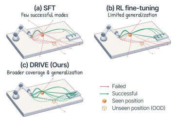
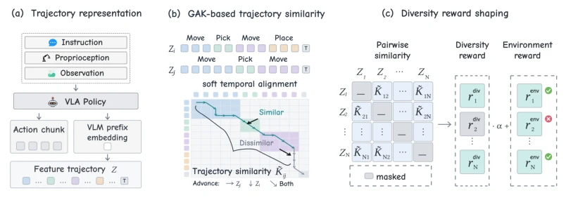
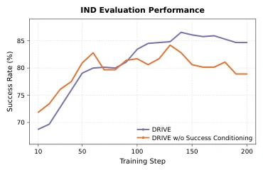

This paper cools the enthusiasm for VLA RL fine-tuning (RFT) while also providing a ladder. Authors find that while RFT improves scores, it easily causes policies to "take shortcuts", leading to convergent successful trajectories and falling into local optimum "involution". DRIVE attempts to break this deadlock through explicit reward diversity. The highlight lies in profound insight: RFT global contraction but successful patterns diverge, this is indeed a "gold mine" for improving generalization. However, GAK computational overhead is significant, and "diversity" itself is a double-edged sword, what if random jitter of invalid actions is rewarded? Fortunately, authors added success-conditioning as a safety net. Experimental data is solid, OOD improved by a few points, also stabilized on real machines. But don't expect it to solve all generalization problems, after all physical world noise is much harder to calculate than GAK kernel functions in simulators, and relies on VLM representations. Overall, this is a solid work "mining new ore in the swamp of RL fine-tuning", but far from a "universal panacea", future needs to solve balance between efficiency and generalization.
研究动机Motivation
VLA 模型通过 SFT 学习演示，但泛化性差 (Kim et al., 2024; Intelligence et al., 2025b)。RFT 通过闭环反馈优化，能提升鲁棒性 (Liu et al., 2025a)，但在分布外（OOD）场景下表现仍不稳定 (Fei et al., 2025)。现有 RFT 方法主要关注任务完成度，忽略了成功轨迹的多样性。标准二元奖励无法区分不同成功模式，导致策略收敛到单一解法，缺乏应对分布偏移的备选策略。虽然已有工作研究技能发现或策略多样化 (Eysenbach et al., 2019; Masood & Doshi-Velez, 2019)，但直接用于 VLA 微调容易奖励无效差异（如速度、时序）。本文旨在挖掘 RFT 中“成功模式多样性”的潜力，将其转化为显式优化目标，以提升泛化能力。
VLA models learn demonstrations via SFT, but generalization is poor (Kim et al., 2024; Intelligence et al., 2025b). RFT optimizes via closed-loop feedback, can improve robustness (Liu et al., 2025a), but performance remains unstable in out-of-distribution (OOD) scenarios (Fei et al., 2025). Existing RFT methods mainly focus on task completion, ignoring diversity of successful trajectories. Standard binary rewards cannot distinguish different success patterns, causing policies to converge to a single solution, lacking backup strategies for distribution shift. Although existing work studies skill discovery or policy diversification (Eysenbach et al., 2019; Masood & Doshi-Velez, 2019), directly applying to VLA fine-tuning easily rewards invalid differences (e.g., speed, temporal sequence). This paper aims to mine the potential of "success pattern diversity" in RFT, transform it into an explicit optimization objective, to improve generalization ability.

Figure 1: Beyond task success, diverse suc- cessful trajectories reveal broader solution modes. This diversity provides a new oppor- tunity for improving VLA generalization.
DRIVE framework core is transforming successful behavior diversity into explicit rewards. First, group rollouts under matched task conditions to ensure fair comparison. Second, use Global Alignment Kernel (GAK) to calculate behavior similarity between trajectories, handling temporal misalignment issues (Cuturi, 2011), avoiding bias from simple step alignment. Next, calculate relative diversity scores only for successful trajectories, failure trajectory reward is 0, preventing rewarding invalid variations. Finally, transform diversity scores into intrinsic rewards via Potential-based Reward Shaping, ensuring optimal policy invariance (Theorem 1). Overall process is: Environment Reward + Diversity Reward. Diversity reward is based on GAK similarity of trajectories within group, lower similarity (higher diversity), higher reward. This design avoids rewarding invalid variations, focuses on covering task effective solution space, enabling policies to explore more solutions while maintaining success.

Figure 3: Overview of DRIVE. (a) Rollouts are encoded as per-decision feature trajectories. (b) GAK computes behavioral similarity by softly aligning feature sequences over monotonic tempo- ral paths, handling execution-rate mismatch. (c) Pairwise similarities are converted into success- conditioned diversity rewards and added to environment rewards to promote exploration diversity.
Tested on LIBERO-Plus, ManiSkill3, RoboTwin 2.0 and real dual-arm platforms. Baselines include Vanilla RFT and variants like noise, KL regularization, etc. Metrics are IND and OOD success rates. DRIVE significantly improves on OOD, pi0 improves 5.3 points, pi0.5 improves 2.0 points. Real machine experiments average improvement 9.2 points under interference, lighting, etc. conditions. Ablation experiments show Success Conditioning is crucial, without this condition performance drops later. Behavior analysis shows DRIVE maintained lower similarity (higher diversity) on successful trajectories, verifying method effectiveness. Additionally, performance consistent across different tasks, proving method generalizability.

Figure 5: Effect of success conditioning on IND performance. IND evaluation success rates of DRIVE with and without success conditioning throughout RFT.
Figure 7: Representative successful real-world Click Bell rollouts under Clean, Distractor, Back- ground, and Lighting conditions (top to bottom). Each row shows a temporally ordered sequence of selected frames from one physical execution.